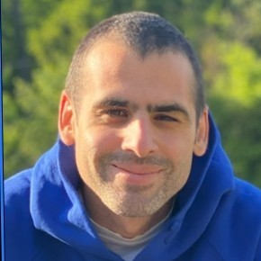

Loading projects…

Audio Signal Processing Engineer & AI Specialist
Tallinn, Estonia
Signal processing engineer with a PhD from EPFL and 15+ years of experience building audio ML systems — from acoustic sensing prototypes to production-grade pipelines at Microsoft. I combine deep expertise in DSP, machine learning, and full-stack development to turn complex audio problems into working software. Currently a Senior Audio Engineer at Microsoft (Teams audio quality) and Co-Founder of Vocametrix, a voice-controlled platform for speech therapy.
Microsoft · Tallinn, Estonia
Sound quality engineering for Microsoft Teams — audio processing pipelines, quality metrics, and signal analysis at scale.
Vocametrix OÜ · Tallinn, Estonia
Voice-controlled games and audio analysis tools for speech therapy. Web platform combining pronunciation assessment, pitch tracking, and gamified exercises.
Hidacs Sàrl · Lausanne, Switzerland
R&D consulting in signal processing and machine learning — feasibility studies, proof-of-concepts, and prototyping for speech, industrial, environmental, and health applications.
Development of an anti-spoofing technology using ultrasound for identity verification liveness detection.
EARSENS project — privacy-preserving indoor activity detection using electrodynamic loudspeakers and AI, without microphones.
Swiss Federal Institute of Technology (EPFL) · Switzerland
Bimodal sound source tracking applied to road traffic monitoring.
Université du Sud Toulon-Var · France
Signal processing, psychoacoustics, and trajectography.
ISEN Toulon · France
Lycée Lachenal · Argonay, France
Loading projects…